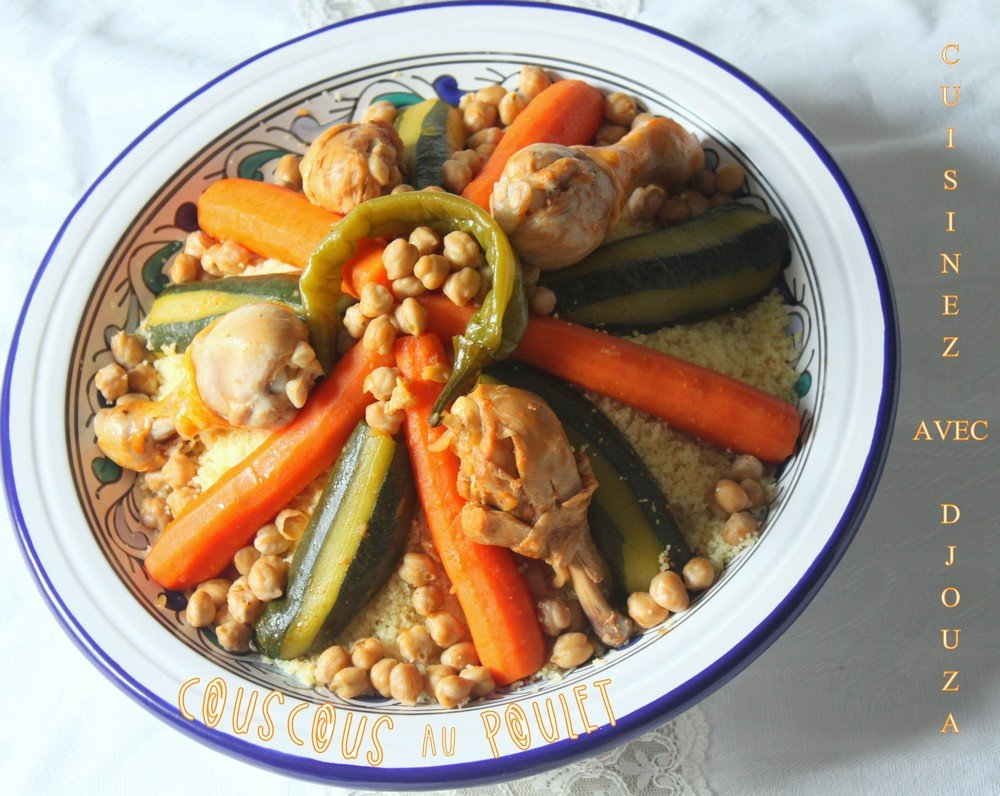
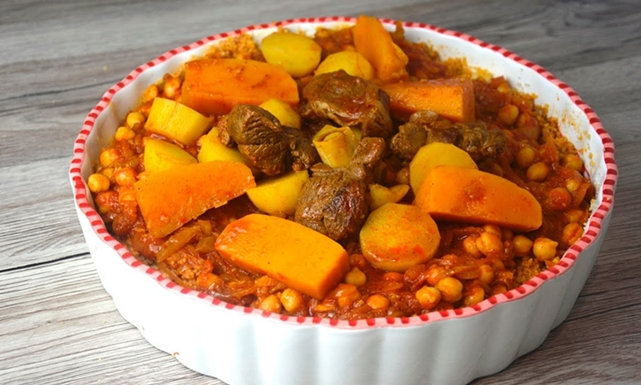

<h1  align ="center" >  Les couscous du monde arabe </h1>


<table border align="center">

  <tr>
     <th>Nom du cousous</th>
     <th>Pays d'origine</th>
     <th>Image</th>
     <th>Comment le preparer</th>

    </tr>


    <tbody>

    </tbody>
    <tr>
       <td>Cousous</td>
       <td>Maroc</td>
       <td></td>
       <td><iframe width="250" height="200" src="https://www.youtube.com/embed/uh7AutuHFAg" title="YouTube video player" frameborder="0" allow="accelerometer; autoplay; clipboard-write; encrypted-media; gyroscope; picture-in-picture" allowfullscreen></iframe></td>

      </tr>

      <tr>
         <td>Barbucha</td>
         <td> Algerie</td>
         <td></td>
         <td><iframe width="250" height="200" src="https://www.youtube.com/embed/8ONXMF2NUR4" title="YouTube video player" frameborder="0" allow="accelerometer; autoplay; clipboard-write; encrypted-media; gyroscope; picture-in-picture" allowfullscreen></iframe></td>

        </tr>


        <tr>
           <td>Cousous barbouche</td>
           <td>Tunisie</td>
           <td></td>
           <td><iframe width="250" height="200" src="https://www.youtube.com/embed/6IjxGr8QFQM" title="YouTube video player" frameborder="0" allow="accelerometer; autoplay; clipboard-write; encrypted-media; gyroscope; picture-in-picture" allowfullscreen></iframe></td>

          </tr>


          <tr>
             <td>Ta aam</td>
             <td>Lybie</td>
             <td></td>
             <td><iframe width="250" height="200" src="https://www.youtube.com/embed/o5r2Fu31K3Q" title="YouTube video player" frameborder="0" allow="accelerometer; autoplay; clipboard-write; encrypted-media; gyroscope; picture-in-picture" allowfullscreen></iframe></td>

            </tr>

            <tr>
               <td>Kuskusi</td>
               <td>Egypte</td>
               <td></td>
               <td><iframe width="250" height="200" src="https://www.youtube.com/embed/Ggs-JFILEqA" title="YouTube video player" frameborder="0" allow="accelerometer; autoplay; clipboard-write; encrypted-media; gyroscope; picture-in-picture" allowfullscreen></iframe></td>

              </tr>

              </tbody>

               <<tfoot>


              <tr>
                 <th>Nom du cousous</th>
                 <th>Pays d'origine</th>
                 <th>Image</th>
                 <th>Comment le preparer</th>

                </tr>
                  </tfoot>


  </table>
